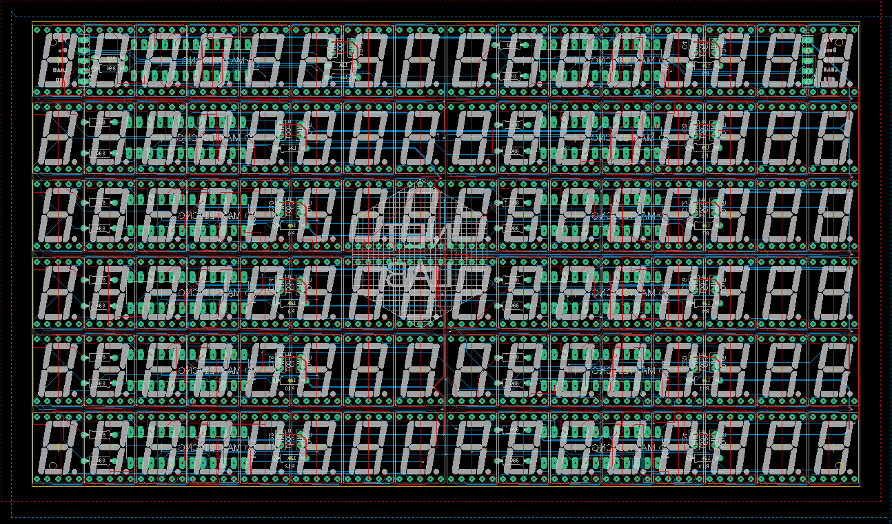
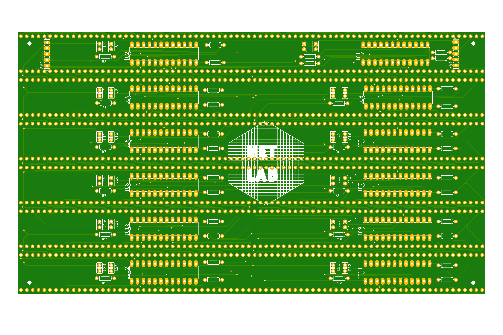

Panel
The panels of the SSS are the crux of its hardware. If you are going to attempt to replicate the SSS, it is recommended that you look at the the Known Problems and address some of those issues. However, for history and current hardware maintenance sake, we will include the current design of the panels.
Panel PCB Blueprints
Panel Schematics
Each panel has a group of 12 MAX7219 led drivers which control 8 seven segment digits. All of the ICs receive the CS, SCLK, VCC, and GND from a common trace. The MOSI coming from the Raspberry Pi enters into the first IC and is passed through all of them by tying the DOUT (output) of the preceding IC to the DIN (input). The start of the bus for the panel (SV1) receives the following from the power board:
- GND
- LOAD (CS)
- CLK (SCLK)
- DIN (MOSI)
- VCC
Originally, the panels were going to be connected together by connecting the busses by having a corresponding 5 pins out (SV2) to connect to the next panel's 5 pins in (SV1). This design made the traces very long and was susceptible to noise and caused a lot of screen artifacts. Instead, each panel receives info from the power board via a cable which plugs into the beginning connector of the bus.

Not shown in schematic: each SCLK and DIN pin on the IC has a resistor of 200Ω+ between it and the trace. This is a hack and should be dealt with in a future hardware design version.
Panel PCB
The PCB design is a double-sided board. The backside is where the 12 ICs, 12 resistors, 24 capacitors, and 2 cable headers are mounted. The frontside is where the 96 seven segment LED digits are mounted.

Panel
This is the back view of manufactured panel. Note that the SV1 input from the power board is on the right hand side of the board and that the set of output pin pads need not be used.

Known Problems
The current version of the SSS panel is flawed. Among the known problems are:
- The output pins are not needed
- The data and clock traces are very long, thin, and susceptible to noise. Changing the trace widths and paths would be necessary.
- Using some sort of differential grounding might also reduce overall board noise.
Any efforts to redesign the panels are more than welcome!
Created: August 3, 2021